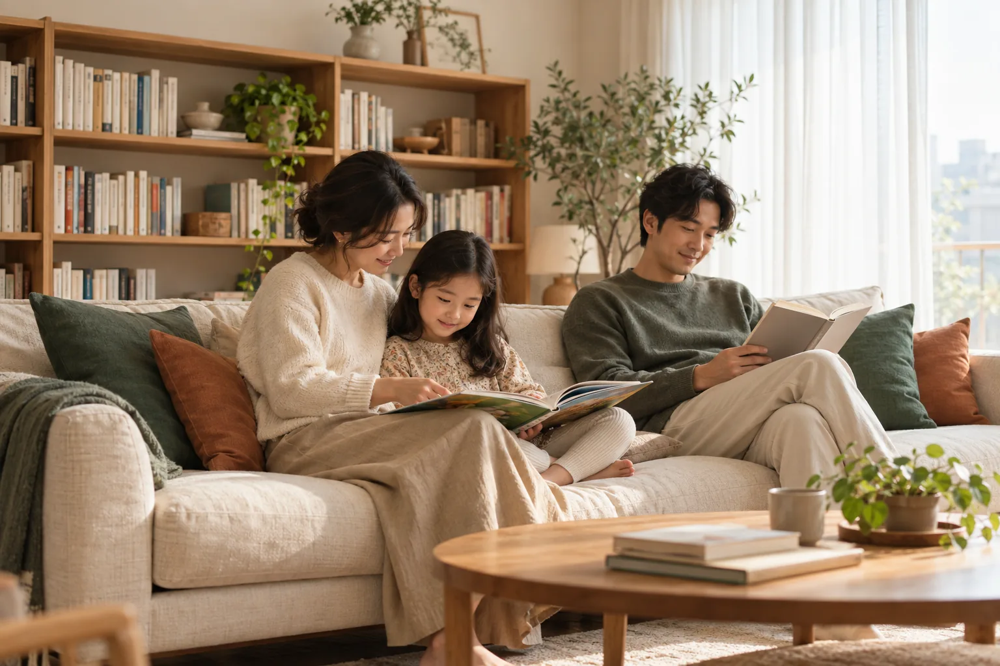
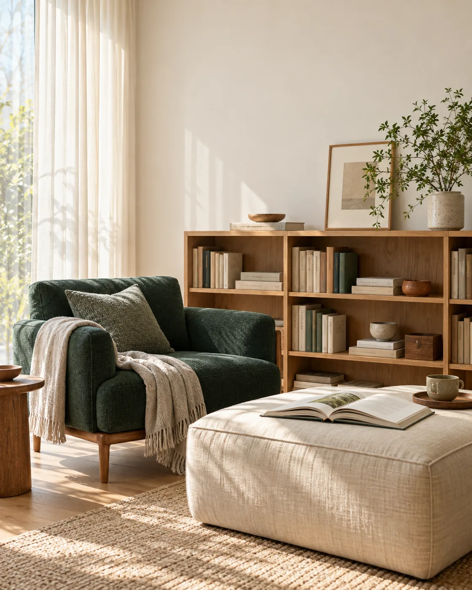
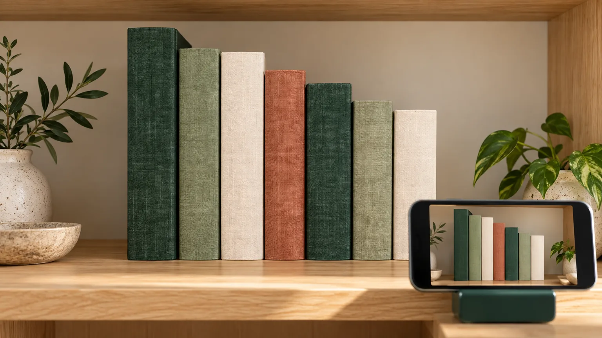
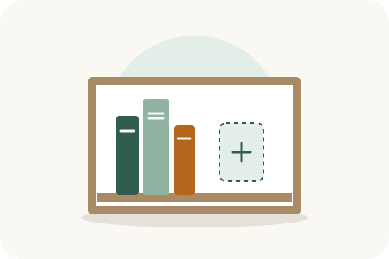
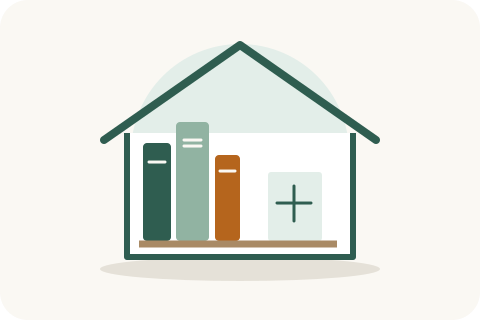
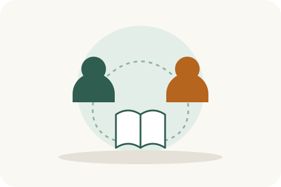
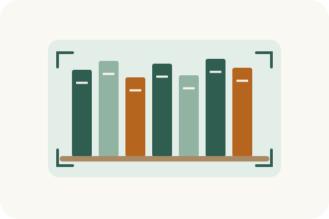
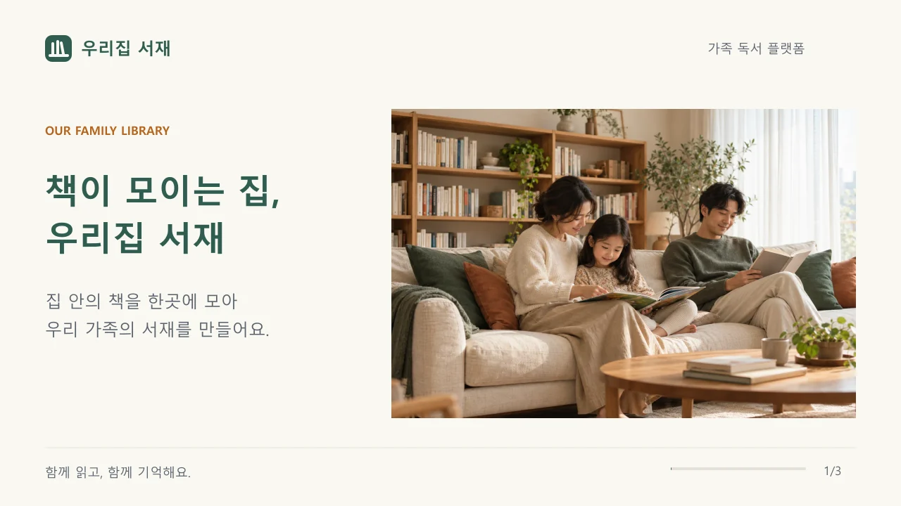
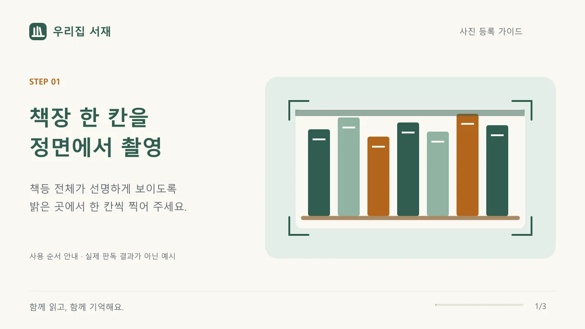

가족의 책장과 동네의 연결
현재 서비스는 ‘서재 만들기 → 책 등록 → 가족·이웃 초대’를 중심으로 장서 관리, 독서 기록, 추천, 동네 대여 기능을 제공합니다.
확인 범위
2026년 10월 4일
2026년 10월 4일
http://192.168.100.100:30503/의 HTTP 200 및 공개 랜딩 HTML을 확인했습니다. 실제 제목·섹션·문구를 로컬 페이지 소스와 대조했습니다. 인증 뒤 페이지는 소스를 기준으로 검토했습니다. 연결된 브라우저가 없어 기존 사이트 및 HTML 시안의 실제 브라우저 화면 검수는 미완료입니다.유지할 서비스 기반
- 이름: 우리집 서재
- 색상: forest green, warm ivory, oak
- 공개 랜딩의 취지·3단계 사용법·6가지 기능·권한 비교·FAQ
- 가족과 이웃의 정보 공개 범위 차이
- 현재 무료 운영 정책과 기존 CTA 목적지
퍼블리싱 개선 방향
- CSS 책장 히어로를 가족 독서 사진으로 교체
- 기능 카드 이모지를 통일된 SVG 아이콘으로 변경
- 빈 화면에서 가능한 다음 행동을 함께 안내
- 사진 등록은 촬영 방법과 결과 확인 단계를 명확히 구분
- 서가·검색·상세의 핵심 도서 정보가 먼저 보이도록 구성
이번 납품 범위: 에셋, 반응형 랜딩 시안, 설계·적용 가이드. 기존 기능 코드와 실행 중인 사이트에 디자인을 적용하거나 배포한 상태는 아닙니다. 기존 사용자가 시작한 k8s-lab 세션은 변경하지 않았습니다.
차분한 색, 실제 생활의 질감
공개 페이지에는 자연광 사진을 사용합니다. 작업 화면에는 작은 안내 그림과 데이터 중심 레이아웃을 사용합니다. 독서 기록·추천·사진 등록의 첫 사용 안내에는 추가 사진을 선택적으로 배치합니다. 사진 위에 제목을 합성하지 않고 모든 문구를 HTML로 유지합니다.
Brand
#2F5D50 · CTA / 제목
#2F5D50 · CTA / 제목
Paper
#FAF8F3 · 페이지
#FAF8F3 · 페이지
Soft
#E3EEE9 · 안내
#E3EEE9 · 안내
Accent
#B5651D · 단계 / 강조
#B5651D · 단계 / 강조
Ink
#1F2933 · 본문
#1F2933 · 본문
타이포그래피
Pretendard → Apple SD Gothic Neo → Malgun Gothic → system-ui. 기존 프로젝트는 폰트 이름만 선언되어 있으므로 실제 Pretendard 파일 제공 여부는 구현 시 확인합니다. 이 자료는 네트워크 폰트 없이 열립니다.
H1 48/60px, 모바일 34/44px · H2 28/40px · H3 18/28px · 본문 16/26px · 보조 14/22px. H1은 페이지당 1개. 한국어는 word-break:keep-all, 긴 파일명·URL은 overflow-wrap:anywhere.
그리드와 형태
콘텐츠 최대 1152px. 데스크톱 좌우 32px, 모바일 16px. 간격 4·8·12·16·24·32·48·64·96px. 사진 radius 24px, 카드 16px, 입력·버튼 10px.
768px 미만 1열, 768~1023px 2열, 1024px 이상 기능 카드 3열. 버튼·폼 높이 최소 44px. 폼 라벨은 항상 노출하며 placeholder로 대체하지 않습니다.
사진 크롭 규칙 가족/이웃 사진은 3:2를 유지합니다. 히어로를 4:5로 강제 크롭하면 가장자리 인물이 잘리므로 사용하지 않습니다. 로그인 사진은 4:5, 초점 50% 50%. 추가 사진 3종은 16:9이며 원본 구도를 유지합니다. 원본을 확대·왜곡하지 않습니다. 실제 도서 표지·프로필 사진은 서비스 데이터로 표시하며 생성 사진으로 대체하지 않습니다.
실제 에셋을 배치한 랜딩 시안
기존 공개 페이지의 핵심 정보 구조를 유지한 반응형 시안입니다. 인증·저장 기능이 없는 정적 디자인 자료입니다. 하단의 서비스 링크는 실제 사이트로 연결하지 않습니다.
뷰포트 전환은 iframe의 표시 너비를 바꿉니다. 좁은 화면에서는 선택한 너비가 사용 가능한 영역으로 제한됩니다.
페이지별 배치와 상태
| 경로 · 소스 | 구조 / 에셋 / 크기 | 모바일·상태 설계 |
|---|---|---|
/src/app/page.tsx | PublicHeader → 히어로(텍스트 52%, 사진 48%) → 취지 → 3단계 → 기능 6개 → 가족·이웃 사진+비교표 → FAQ → SiteFooter. landing-hero-family-reading 3:2. 단계: onboarding / scan poster / invite. 기능 아이콘 24px. | 제목·설명·시작 CTA → 사진 순서. 사진이 첫 CTA를 밀어내지 않게 함. FAQ는 details/summary. 권한 비교는 가로 스크롤 영역 제목 제공. |
/loginsrc/app/login/page.tsx | 데스크톱 max 1000px의 좌측 독서 공간 사진 46% + 우측 360px 폼. auth-reading-nook 4:5. 기존 GoogleSignInButton 유지. | 모바일은 폼 우선, 장식 사진 숨김. 로그인 오류는 폼 앞에 role=alert. 실제 인증 설정에 따라 CTA 표시. 기존 개발 테스트 로그인은 운영 노출하지 않음. |
/onboarding | onboarding-create-library 180×120. 서재 이름·생성 CTA → 초대받은 사용자 안내. 사진은 데스크톱 보조만 사용. | 초대받은 사용자가 새 서재를 불필요하게 만들지 않도록 초대 링크 안내를 유지. 중복 제출 중 버튼 비활성 + 처리 텍스트. |
/invite/[token] | invite-family-circle 240×160. 초대한 서재·역할·공개 범위 → 참여 버튼. | 만료/사용한도/이메일 불일치에는 축하 이미지 숨기고 원인과 다음 행동을 표시. 이웃 초대는 가족 기록 비공개 설명 유지. |
/dashboard | 구성원 선택 → 지표 카드 → 분야별/월별 그래프 → 최근 기록. 장서 0권일 때 shelves-empty-first-book 240×160. | 데이터가 있으면 장식 히어로 생략. 차트에는 텍스트 값/표 제공. 숫자 0, 로딩, API 실패를 각각 구분. |
/shelves | 위치 트리 → 필터/이동 → 도서 표지 그리드. 비어 있는 서가에 첫 책 그림. 실제 표지는 2:3 프레임 + contain; 표지 없으면 book-cover-unavailable. | 2열부터 시작해 너비에 따라 4~6열. 위치 트리는 접이식 패널. 위치 미생성은 설정 CTA, 책만 없으면 책 등록 CTA. 다중 선택 상태는 색+체크 표시. |
/search | 검색 입력 → 조건 칩 → 결과 수 → 목록. search-empty-discovery 240×160은 검색 결과 0건일 때. | 검색어/필터 유지. 조건 초기화 액션. 전체 장서 0권은 첫 책 그림. 외부 내용 검색 실패에는 재시도 텍스트, ‘결과 없음’으로 오인시키지 않음. |
/add / /add/photo | 입력 방식 선택 → 위치 → 사진 업로드 → 판독 목록 검토 → 확정 등록. 스캔 안내 max 480×320. 완료는 실제 성공 이후 book-save-success-once 64px. | 촬영 전 정면·한 칸씩·글자 선명도 안내. 판독이 틀릴 수 있으므로 제목/ISBN 확인 단계 유지. 업로드·판독·저장 상태를 텍스트로 표시. |
/books/[id] / /books/[id]/edit | 실제 표지 160~220px → 서지 → 소장본/위치 → 읽기 기록 → 메모. 표지 없음만 공통 대체 그림. 기록이 완전히 없는 섹션은 journal 그림 선택적 사용. | 모바일 표지와 제목을 첫 화면에 함께 배치. 저장 실패 시 입력 보존. 같은 책의 여러 소장본·가구별 권한을 유지. |
/me / /recommend | 읽는 중·완독·위시리스트 / 미독 소장책 먼저 → 구매 후보. reading-empty-journal 240×160은 기록 부족 시 안내. | 추천 없음·후보 없음·외부 API 실패를 구분. 실제 추천 근거를 텍스트로 제공. 구매 제휴 표시는 기존 정책을 유지. |
/neighborhood | 미참여 안내에 이웃 사진 max 480px. 참여 후에는 공유 책·대여 상태·도서관 정보 중심. 검색 0건은 search 그림. | 가구 없는 이웃 계정을 지원. 대여 가능한 책만 노출. 위치·가족 구성원·독후감 데이터는 카드에 추가하지 않음. 비참여·접근거부를 구분. |
/settings | 가구 정보 → 가족·초대 → 위치/구역 → 내보내기. 초대 안내에 invite 그림 160px 이내 선택적 사용. | 긴 폼을 섹션으로 나누고 저장 범위를 명확히 표시. 관리 권한 없는 사용자에게 실행 불가능한 액션을 노출하지 않음. |
/pricing / /terms / /privacy / /admin | 요금은 실제 무료 정책과 비교표, onboarding 그림 선택적 160px. 약관·개인정보·운영 화면은 본문/표 중심. | 요금·정책을 시안에서 임의 변경하지 않음. 법적 고지에는 장식 사진·모션을 넣지 않음. 관리자 화면에 소비자용 감성 배너를 넣지 않음. |
로그인 뒤 페이지의 실제 소스 위치는 src/app/(app)/…/page.tsx입니다. 동적 경로의 [id], [token]은 폴더명을 뜻합니다.
파일명으로 사용처를 알 수 있게
{page-or-feature}-{purpose}-{subject}[-{width}].{ext} 규칙을 사용합니다. 개발용은 photos/의 WebP와 SVG입니다. _masters/의 PNG는 원본 보관용이며 페이지에서 불러오지 않습니다.



photos/auth-reading-nook-1120.webp/login · /onboarding
데스크톱 로그인 좌측 4:5 패널. 온보딩 보조 이미지. 모바일에서는 숨기거나 작은 보조 컷으로 배치

photos/neighborhood-book-sharing-1536.webp/#neighbors · /neighborhood
랜딩 가족·이웃 설명 옆 3:2 사진. 동네 미가입 안내 보조. 공유 장서 목록에는 반복하지 않음

photos/me-reading-journal-desk-1536.webp/me · /books/[id]
독서 기록 첫 사용 안내의 16:9 사진. 기록 목록이 있으면 작은 보조 컷으로 축소

photos/recommend-unread-books-selection-1536.webp/recommend
사기 전에 이 책부터 섹션 소개용 16:9 사진. 실제 추천 도서 표지를 대체하지 않음


photos/add-photo-shelf-framing-1536.webp/add/photo · /#how
사진 업로드 전 촬영 안내. 16:9 전체 프레임 유지, 최대 표시 폭 480px





illustrations/onboarding-create-library.svg/onboarding · /#how · /pricing
서재 생성 폼 위 180×120px / 사용 방법 1단계


illustrations/invite-family-circle.svg/invite/[token] · /settings · /#how
유효한 초대 화면/가족 초대 안내. 만료·권한 오류에는 사용하지 않음

illustrations/reading-empty-journal.svg/me · /recommend · /books/[id]
기록이 없거나 추천 근거가 부족할 때. 사실과 다른 추천 결과를 표현하지 않음

illustrations/book-cover-unavailable.svg/shelves · /search · /books/[id] · /recommend · /neighborhood
실제 표지 URL이 없거나 로드 실패 시. 제목·저자는 옆의 HTML로 제공







사진은 큰 버전을 대표로 표시했습니다. 사진 WebP 12개, SVG 16개, 영상 MP4/WebM 4개, 영상 포스터 2개를 합해 웹용 미디어는 34개입니다. 한국어 자막·대본은 별도 4개, PNG 원본은 6개입니다. 영상은 아래 링크의 전용 미리보기에서 확인할 수 있습니다.
추가 미디어 업데이트 02
독서 노트 사진은 /me·/books/[id], 미독 도서 사진은 /recommend, 촬영 구도 사진은 /add/photo에 사용합니다. 서비스 소개 영상은 랜딩의 사용법 앞뒤, 촬영 안내 영상은 업로드 전에 사용자 선택으로 재생합니다.
필요한 순간에만 짧게
기존 SVG 안내·완료 효과에 더해 서비스 소개와 사진 등록 안내 영상 2종을 추가했습니다. 각각 12초, 1280×720, 24fps, 무음이며 MP4(H.264)와 WebM(VP9)를 제공합니다. 포스터·한국어 VTT·텍스트 대본도 포함합니다. 소개는 사진 편집 영상이고 촬영 안내는 벡터 모션그래픽입니다. Flash는 지원 종료에 따라 사용하지 않습니다. Adobe 공식 안내
책장 촬영 안내 · 3.6초
사용자의 안내 보기 선택으로 1회. 판독 진행률·정확도·실제 스캔 결과를 나타내지 않습니다.
책 저장 완료 · 0.9초
시안의 샘플 효과입니다. 서비스에서는 서버 저장 성공 확인 뒤 표시하며, “책 N권을 등록했어요”를 aria-live=polite로 함께 알립니다.
정지 상태입니다. OS의 동작 줄이기 설정이 있으면 애니메이션을 실행하지 않습니다.
- 무한 반복·자동 재생 배경 영상·점멸·소리 없음.
- SVG 내부
@media(prefers-reduced-motion:reduce)로 모션을 제거하고 기본 그림을 유지합니다. - 컴포넌트 hover/focus transition은 120~180ms, 페이지 진입 효과는 선택적으로 180ms 이내. 핵심 정보의 표시를 애니메이션 종료에 의존시키지 않습니다.
- 실제 반복 로딩에는 이 에셋을 늘려 쓰지 말고 별도 상태 텍스트와 정지 가능한 진행 표시를 설계합니다.
기술 참고: MDN prefers-reduced-motion
현재 Next.js 구조에 연결하기
경로 주의
src/img는 브라우저 공개 폴더가 아닙니다. src="/src/img/…"로 연결하면 안 됩니다. 기존 @/ 별칭으로 static import하고 next/image에 전달합니다. 일반 HTML로 제공할 때만 필요한 파일을 public/img에 복사하고 /img/…로 참조합니다.import Image from 'next/image'
import hero from '@/img/photos/landing-hero-family-reading-1536.webp'
<Image
src={hero}
alt="햇살이 드는 거실에서 함께 책을 읽는 가족"
sizes="(max-width: 767px) calc(100vw - 32px), (max-width: 1199px) 46vw, 520px"
preload
style={{ width: '100%', height: 'auto', borderRadius: 24 }}
/>현재 Next.js 16 기준 히어로 1개에만 preload를 사용하고 하단 사진은 lazy loading을 유지합니다. SVG 모션은 unoptimized로 원본을 전달합니다. 사진과 SVG를 import할 때에는 필요한 파일만 선택합니다. Next.js Image 공식 문서
포함된 개발 자료
히어로 Next.js 컴포넌트 예제사용자 재생형 촬영 안내 예제경로·페이지·alt·규격·SHA-256 매니페스트초기 이미지 생성 프롬프트추가 이미지 생성 프롬프트영상 연결 예제영상 검증 보고서파일·참조 검증 결과이미지 전달 예산
랜딩 히어로: 1536px 129.3KiB / 768px 51.6KiB. 로그인: 1120px 165.9KiB / 640px 70.8KiB. 이웃: 1536px 127.0KiB / 768px 48.0KiB.
웹용 전체 파일 합계 2549.7 KiB. 전체 파일을 한 페이지에서 동시에 요청하지 않습니다. 신규 UI 라이브러리나 애니메이션 라이브러리가 필요하지 않습니다.
영상 연결
영상은 src/img/video에 보관되어 있습니다. 구현 시 필요한 파일을 public/img/video로 복사하고 /img/video/…로 연결합니다. MP4를 next/image에 전달하지 않습니다. 기본은 controls playsInline preload="none"과 포스터입니다. autoplay·loop를 사용하지 않으며, 자막과 대본을 함께 제공합니다. 동작 줄이기 사용자에게도 명시적 재생 전에는 정지 포스터를 유지합니다. 모바일에서는 영상 아래에 HTML 대본을 함께 배치합니다.
영상 제작은 build-videos.cjs와 FFmpeg 7.1을 사용했습니다. 앱의 런타임 의존성은 추가하지 않았습니다.
개발 순서
- 랜딩에서
ShelfIllustration를 히어로 사진으로 교체. 단락/버튼/링크 의미 유지. - 사용법 그림과 기능 SVG를 연결하고 이웃 설명에 사진 배치.
- 로그인·온보딩·초대 페이지를 공통 폭·여백으로 정리.
- 서가·검색·기록의 빈 상태 조건을 구분해 에셋과 CTA 연결.
- 사진 등록 안내와 저장 완료를 실제 작업 상태에 맞춰 연결.
- 권한별 동작·접근성·모바일 레이아웃을 검사한 뒤 k8s-lab에서 통합 검증.
출처 및 재생성
사진 6종은 내장 image_gen으로 생성했습니다. 프롬프트는 image-prompts.json과 image-prompts-additional.json, 웹용 압축은 기존 프로젝트의 sharp를 사용한 optimize-images.cjs에 기록했습니다. SVG는 기존 src/app/icon.svg의 색상과 선반 모티프를 바탕으로 직접 작성했습니다. 기존 서비스 로고는 그대로 유지합니다.
생성 사진은 연출 이미지이며 실제 이용자·실제 공간·추천 도서의 증거가 아닙니다. 사진 파일에는 텍스트를 덧그리지 않았으며 영상의 한국어 문구는 별도 편집했습니다. 원본 책등의 작은 의사 문자는 실제 서지 정보로 사용하지 않습니다.
적용 완료를 판단할 기준
디자인·접근성
- 360·390·768·1024·1440px에서 가로 넘침과 인물 잘림 확인
- 200% 확대, 키보드 Tab, 명확한 focus ring, 터치 영역 44px 확인
- 의미 있는 사진에는 alt, 인접 문구와 중복되는 장식 그림에는 alt=""
- 본문 명암비 4.5:1, 큰 글자 3:1을 목표로 실제 합성 색 검증
- 오류·성공·선택 상태에 색 외 텍스트/아이콘 병행
- 동작 줄이기 설정에서 모션 대신 정지 그림 확인
구현·성능
- 이미지 width/height 또는 aspect-ratio로 레이아웃 공간 확보
- 히어로만 우선 로드, 하단·숨겨진 사진 지연 로드
- 도서 표지 404·빈 URL 대체 그림 확인
- 권한 OWNER/ADMIN/MEMBER/CHILD/이웃에 따른 표시 검증
- 성공 모션은 저장 성공에만 연결, 실패 입력 보존
- LCP ≤2.5s, CLS ≤0.1, INP ≤200ms를 목표로 통합 후 실측. 현재 수치는 미측정
k8s-lab 검증 계획
이번 작업은 정적 파일 생성으로 추가 VM·Pod를 만들지 않았습니다. 실제 페이지 적용 후에는 기존 배포 절차로 테스트하고 30503에서 로그인·가족/이웃 권한·사진 등록·모바일 이미지 전달을 확인합니다. 새 자동 테스트 세션은 lab-vm.ps1 test-run을 사용해 종료 시 전원을 끕니다. 다른 사용자의 기존 세션은 임의로 종료하지 않습니다.
현재 검증 범위
생성 사진은 직접 시각 확인했고, SVG는 래스터 미리보기로 형태를 확인합니다. 파일 디코딩·XML 문법·해시·상대 참조·웹용 용량은 검증 보고서에 기록합니다. 영상은 MP4/WebM 전체 프레임을 디코딩해 길이·프레임 수·코덱·무음·MP4 faststart를 검사하고 실제 파일의 1·5·9초 프레임을 시각 확인합니다. 브라우저별 레이아웃·애니메이션 재생·스크린리더·실기기·배포 후 동작은 구현 단계의 남은 검수입니다.
웹용 파일 전체 명세
| src/img 기준 상대경로 | 사용 페이지 | 크기 | KiB |
|---|---|---|---|
photos/landing-hero-family-reading-768.webp | / | 768×512 | 51.6 |
photos/landing-hero-family-reading-1536.webp | / | 1536×1024 | 129.3 |
photos/auth-reading-nook-640.webp | /login · /onboarding | 640×800 | 70.8 |
photos/auth-reading-nook-1120.webp | /login · /onboarding | 1120×1400 | 165.9 |
photos/neighborhood-book-sharing-768.webp | /#neighbors · /neighborhood | 768×512 | 48.0 |
photos/neighborhood-book-sharing-1536.webp | /#neighbors · /neighborhood | 1536×1024 | 127.0 |
photos/me-reading-journal-desk-768.webp | /me · /books/[id] | 768×432 | 48.1 |
photos/me-reading-journal-desk-1536.webp | /me · /books/[id] | 1536×864 | 136.9 |
photos/recommend-unread-books-selection-768.webp | /recommend | 768×432 | 32.0 |
photos/recommend-unread-books-selection-1536.webp | /recommend | 1536×864 | 88.8 |
photos/add-photo-shelf-framing-768.webp | /add/photo · /#how | 768×432 | 25.0 |
photos/add-photo-shelf-framing-1536.webp | /add/photo · /#how | 1536×864 | 133.0 |
illustrations/shelves-empty-first-book.svg | /shelves · /dashboard | 480×320 | 1.1 |
illustrations/search-empty-discovery.svg | /search · /neighborhood | 480×320 | 0.8 |
illustrations/onboarding-create-library.svg | /onboarding · /#how · /pricing | 480×320 | 1.2 |
illustrations/invite-family-circle.svg | /invite/[token] · /settings · /#how | 480×320 | 0.9 |
illustrations/reading-empty-journal.svg | /me · /recommend · /books/[id] | 480×320 | 0.8 |
illustrations/book-cover-unavailable.svg | /shelves · /search · /books/[id] · /recommend · /neighborhood | 240×360 | 0.6 |
motion/add-photo-scan-poster.svg | /add/photo · /#how | 480×320 | 1.4 |
motion/add-photo-scan-once.svg | /add/photo · /#how | 480×320 | 1.9 |
motion/book-save-success-poster.svg | /add · /add/photo | 160×160 | 0.4 |
motion/book-save-success-once.svg | /add · /add/photo | 160×160 | 0.7 |
icons/feature-dashboard.svg | /#features | 24×24 | 0.3 |
icons/feature-shelves.svg | /#features | 24×24 | 0.4 |
icons/feature-search.svg | /#features | 24×24 | 0.3 |
icons/feature-reading.svg | /#features | 24×24 | 0.4 |
icons/feature-recommend.svg | /#features | 24×24 | 0.4 |
icons/feature-neighborhood.svg | /#features | 24×24 | 0.4 |
video/landing-family-library-story-720p.mp4 | / · /#how | 1280×720 | 567.8 |
video/landing-family-library-story-720p.webm | / · /#how | 1280×720 | 465.5 |
video/landing-family-library-story-poster.webp | / · /#how | 1280×720 | 61.3 |
video/add-photo-three-step-guide-720p.mp4 | /add/photo · /#how | 1280×720 | 162.7 |
video/add-photo-three-step-guide-720p.webm | /add/photo · /#how | 1280×720 | 203.1 |
video/add-photo-three-step-guide-poster.webp | /add/photo · /#how | 1280×720 | 21.1 |
원본은 _masters/*-original.png 6개입니다. 신규 원본: me-reading-journal-desk, recommend-unread-books-selection, add-photo-shelf-framing. 사진별 WebP 2개는 서로 다른 이미지가 아닌 해상도 변형입니다.